Kappale 2 2025
Jaoteltu kysymykset aihepiireittäin diapakettien mukaan ja voi täten lueskella aiheesta enemmän, jos tiivistelmät vastausten alla tai yhteenvetodiapaketti eivät riitä.
2.1 Luento 3: Alaraajasairaudet
Tässä alla tämän diapaketin aiheisiin liittyvät kysymykset
2.1.1 Mikä kuvantamistutkimus trokanterbursiitissa?
Valitse yksi
- Röntgen
- TT
- Ei mitään
- Joku muu
Solution.
cTrocanther majorin kipuoireyhtymän taustalla voi olla ison sarvennoisen alueelle kiinnittyvien pakaralihasten (m. gluteus medius ja maximus) insertiokohdan tulehdusreaktio, jänteen rappeumamuutokset tai ison sarvennoisen limapussitulehdus (bursiitti).
Altistavia tekijöitä ovat mm. reuma, naissukupuoli ja alaraajojen eripituisuus
Oireilee kipuna yläreiden ulkosyrjässä, kipu usein myös pakaran alueella ja saattaa säteillä alemmas alaraajaan lihaskalvoja pitkin. Oiretta provosoi ylämäkeen tai portaissa juoksu sekä kyykistymiset ja kyykystä tai istumasta ylösnousut. Myös nukkuminen kyljellä on kivuliasta ja voidaan todeta palpaatioarkuutta.
Lonkkanivelen liikkuvuus on yleensä normaali, mutta liikkuvuustestaukset ovat vastustettuina usein kivuliaita (erityisesti sisäkierto; myös loitontaminen).
Diagnoosi on useimmiten kliininen ja lisätutkimuksia ei tarvita. Jos epäilee murtumaa tai on vaikeuksia erottaa tilanne lonkan nivelrikosta, niin tietysti voi ottaa natiivirtg. Tarkin kuvantaminen olisi magneettikuvaus, mutta on muistettava, että poikkeavia limapussi- ja jännemuutoksia voidaan todeta oireettomillakin henkilöillä ja tämän takia löydökset ovat useimmiten epäspesifisiä (MRI voidaan ottaa erityistilanteissa, esimerkiksi jos on epäily laajemmasta lihasrepeämästä). Myös ENMG olisi normaali, jos se tehtäisiin.
Oireita aiheuttavan kuormituksen ja rasituksen vähentäminen tai välttäminen, paikallinen kylmähoito sekä terapeuttinen harjoittelu (voi lähettää fysioterapeutille) on hoidon perusta. Huom. kannattaa tarkistaa alaraajojen pituusero (altistava tekijä) ja tarvittaessa tehdä korjauksia sen suhteen.
On tärkeää korostaa potilaalle tilan vaarattomuutta, vaikka kipu voikin kestää kuukausia. Lääkehoitona käytetään tulehduskipulääkettä ja parasetamolia tarvittaessa. Pitkittyvää kiputilaa voidaan hoitaa myös pakaralihaksen kiinnityskohtaan ruiskutettavalla puudute-glukokortikoidi-injektiolla.
Iskiogluteeali (istuinkyhmy)- ja iliopsoasbursiitissa oirekuva voi olla hieman erilainen, mutta tutkimus- ja hoitoperiaatteet ovat samat. Istuinkyhmyn bursiitissa hamstringien kiinnityskohta on ärsyyntynyt -> kipu istuessa (kosketuskipu -> istuu toisella pakaralla), suoran jalan nostossa (venytyskipu testin aikana) ja palpoidessa istuinkyhmyä. Iliopsoasbursiitissa on taas m. iliopsoaksen kiinnityskohdan tulehdus, joka aiheuttaa nivuskipua kävellessä, juostessa, kyykistyessä, lonkkaa koukistaessa. Kipua todetaan vastustetussa reiden koukistuksessa ja passiivisessa lonkan ojennuksessa.
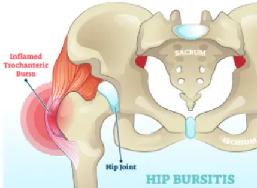2.1.2 Mikä liikelaajuus rajoittuu herkimmin lonkan nivelrikossa?
Ei vaihtoehtoja tärpeissä, mutta tulisi osata vastata ilman vinkkejä
Solution.
SisäkiertoLonkkanivelestä tutkitaan passiivinen abduktio ja adduktio, sisään- ja uloskierto, koukistus ja ojennus. Sisäänkierto rajoittuu herkimmin, mutta myös muut liikelaajuudet voivat pienentyä ja lonkan lihasvoima (loitonnus-, lähennys- ja koukistusvoima) voi heikentyä. Passiivisen liikuttamisen yhteydessä voi tuntua kipua tai ritinää.
Lonkan nivelrikon tunnettuja riskitekijöitä ovat mm. ikä, ylipaino, vammat, kuormitus, nivelen kehityshäiriöt ja perimä.
Oireilu on nivelkipua (alussa vain rasituksessa ja myöhemmin leposärky) ja niveljäykkyyttä. Lonkkanivelperäinen kipu tuntuu usein nivustaipeessa ja reiden etuyläpinnalla, mutta se voi myös olla laaja-alaisempi ja epätarkempi ja tuntua pakaran alueella ja säteillä reiden etu-, ulko- ja takapinnalle. Liikkeellelähtöjäykkyyttä esiintyy esimerkiksi istumisen jälkeen. Istumasta seisomaan nouseminen ja päinvastoin on hankalaa.
Nivelkivun, niveljäykkyyden ja suoritusrajoitteiden arviointiin on kehitetty erilaisia potilaan subjektiiviseen arvioon perustuvia kyselylomakkeita (esim. WOMAC (Western Ontario and McMasters University Osteoarthritis Index).
Laboratoriotutkimuksia ei tarvita aina rutiinisti, mutta voivat usein olla tarpeen erotusdiagnostiikassa (tilanteen mukaan PVKT, CRP, La, RF, CCP, uraatti).
Kuvantamisia ei aina tarvitse, mutta usein otetaan natiiviröntgen poissulkemaan muut muutokset ja samalla voiaan arvioida nivelrikon astetta (Kellgrenin ja Lawrencen luokitus). Lähetä ortopedille jos on toimintakyvyn alenema tai leposärky tai pitkälle edennyt nivelrikko rtg:ssä. Magneettikuvaus ei kuulu artroosin perustutkimuksiin, mutta voi olla täydentävä tutkimus joskus. Jos röntgenkuvien perusteella epäillään avaskulaarista nekroosia, pahanlaatuista kasvainta tai infektiota, magneettikuvaus on suositeltava.
Hoidossa etenkin liikunnallinen ohjaus on tärkeää sekä hoidon että ehkäisyn kannalta, ja se tulee aloittaa heti diagnosoinnin jälkeen. Potilasta on ohjattava pysymään aktiivisena. Liikunta vähentää kipua ja parantaa nivelten toimintaa. Painonhallinta tärkeää. Fysioterapia voi myös auttaa ja kannattaa tehdä lähete fysioterapeutille. Kipulääkkeinä ensisijaisesti parasetamoli+NSAID tarvittaessa tai säännöllisesti. Kortisoni-injektio voi auttaa (tehdään UÄ-ohjauksella).
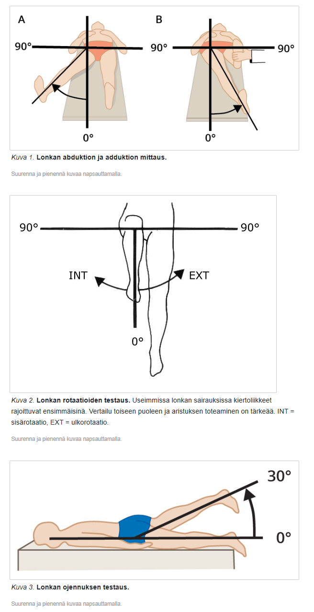2.2 Luento 4: Niskakipu ja yläraajan sairaudet
2.2.1 Whiplash-vamman hoidon periaatteet
Ei vaihtoehtoja tärpeissä, tässä tärkeimmät:
- Kaularangan piiskaniskuvammalla tarkoitetaan niskan edestakaista etu-takasuunnan retkahdusliikettä, joka syntyy esimerkiksi peräänajokolarissa. Klassisesti vamma on kuvattu siten, että potilas istuu pysähtyneessä ajoneuvossa, jonka perään yllättäen törmää toinen ajoneuvo. Tällöin potilaan pää retkahtaa aluksi taaksepäin ja tämän jälkeen vielä eteenpäin. Potilas hakeutuu vastaanotolle niskakivun takia.
- Oirekuva vaihtelee paljon varsinkin alkuvaiheessa. Osa potilaista on varsin hätääntyneitä ja heillä voi olla erilaisia raajojen puutumisoireita hyperventilaatioon liittyen. Osa potilaista puolestaan saattaa olla parikin päivää kotona tai töissä ja hakeutuu vastaanotolle vasta viiveellä niskakivun jatkuvasti pahentuessa.
- Diagnostiikka perustuu aina tyypilliseen anamneesiin sekä vakavan vamman poissulkuun, ja tätä kautta jäljelle jää whiplash-diagnoosi. Diagnoosi edellyttää, että potilaalla on piiskaniskuvammaan sopiva vammamekanismi ja paikallinen niskakipu, eikä hänellä ole mitään todettavia neurologisia puutosoireita, jotka voisivat viitata rankavammaan. Kuvantaminen tarvittaessa (TT korkeaenergisissa vammoissa).
Hoito:
Whiplash-vammassa on tyypillistä, että paikallinen niskakipu pahenee muutaman ensimmäisen päivän ajan ja alkaa vasta sitten helpottaa. Tämä on syytä kertoa potilaalle jo alkuvaiheessa.
Alkuvaiheen riittävä ja asianmukainen kivunhoito, yhdistämällä esimerkiksi NSAID+parasetamoli, on tärkeää.
Potilaan kannustaminen aktiivisuuteen heti alusta alkaen edistää piiskaniskuvamman paranemista paremmin kuin passiiviset hoitomenetelmät (tulee siis välttää lepoa ja tukikauluria)
Lyhyt sairasloma tarvittaessa.
Potilaat, joilla on pitkäaikaisia tai laaja-alaisia oireita, tulee ohjata fysiatrille.
Useimmat retkahdusvammapotilaat toipuvat nopeasti 2–3 kuukaudessa.
- Whiplash-vammaan liittyy valitettavan usein (jopa 10%) kivun pitkittymistä jopa kuukausiksi. Tarkkoja syitä tai mekanismeja tälle ei vielä tiedetä.

2.2.2 Epikondyliitin hoito
Valitse yksi
- Jatkuvat glukokortikoidi-injektiot
- Kuukauden lepo
- Lepo (suhteellinen), fysioterapia, kylmä, tuki
- joku
Solution.
cLateraalinen epikondyliitti (tenniskyynärpää) ja mediaalinen epikondyliitti (golfkyynärpää) ovat kyynärpään tendinopatioita, jotka johtuvat lihasten kiinnityskohtien ärsytyksestä (tenniskyynärpäässä m. extensor carpi radialis brevis (ECRB) ja golfkyynärpäässä monia lihaksia (Pronator teres, flexor carpi radialis, flexor carpi ulnaris, flexor digitorum superficialis ja palmaris longus lihakset)).
Toistuva ylirasitus (ammatillinen/urheilu) johtavat kipuun; joskus taustalla on trauma. Yleinen teoria kivulle on, että sen aiheuttaa mikrotrauma/repeämä kiinnityskohdan alueella (ei niinkään tulehdus).
Diagnostiset kriteerit:
Lateraalisessa tendinopatiassa: Ranteen ojennuksen vastustuksessa kipu tuntuu olkaluun ulkosivunastassa ja todetaan palpaatioarkuus samassa kohdassa.
Mediaalisessa tendinopatiassa: Ranteen koukistuksen vastustuksessa kipu tuntuu olkaluun sisäsivunastassa ja todetaan palpaatioarkuus samassa kohdassa.
Useimmiten tila paranee itsestään. Hoito-ohjeita ovat rasituksen vähentäminen, kivun hoito parasetamolilla ja (paikallisilla) NSAIDeilla tarvittaessa. Kylmähoito ja fysioterapia voi auttaa. Kyynärtuki voi auttaa (lateraali- ja mediaaliepikondyliitissä käytetään samaa tukea, mutta tuki käännetään toiselle puolelle tilasta riippuen)


2.3 Luento 6: Laaja-alaiset kivut, CPRS, toimintakykyarvio
2.3.1 Milloin voidaan harkita vahvoja opioideja
Valitse yksi
- Kivun syy on tiedetty, muut hoitomenetelmät on kokeiltu, ei ole aiempaa päihdeongelmaa, ei ole hoitamatonta psykiatrista ongelmaa, potilas on yhteistyökykyinen, motivoitunut hoitokokeiluun ja sitoutuu hoitosopimukseen, jatkohoito on turvattu
- Kivun syy on tuntematon, voimakas kipu yli kolme kuukautta, tulehduskipulääkkeiden ja mietojen opioidien tehottomuus
- Kipu on kestänyt 6kk ja on hyvin laaja-alainen
- Kipu aiheuttaa ahdistuneisuutta
Solution.
a2.3.2 Fibromyalgian ensisijainen lääkehoito
Ei vaihtoehtoja, mutta tulisi osata vastata ilman vinkkejä
Solution.
Trisykliset masennuslääkkeet
Eli siis esim. amytriptyliini ja nortriptyliini. Myös SNRI-lääkkeet (esim. duloksetiini tai venlafaksiini tai milnasipraani) ja gabapentinoidit (pregabaliini ja gabapentiini) voivat auttaa.
Tukena voi myös kokeilla parasetamolia (ja mahdollisesti NSAIDeja), mutta ne eivät yleensä auta merkittävästi (tämä on hyvä erotusdiagnostinen vihje kylläkin).
Opiaatit eivät auta!
HUOM! Lääkkeetön hoito on tärkeintä. Tähän kuuluu tärkeimpinä säännöllinen liikunta, hyvä unihygienia ja potilaan opettaminen oireyhtymän luonteesta. Koska jumppien ja liikunnan aloittamiseen liittyy lihaskipujen lisääntymistä, liikunta kannattaa aloittaa varovasti ja vähitellen elimistöä kuunnellen (“start low, go slow”) ja siihen kannattaa liittää myös venyttelytyyppisiä ja rentouttavia elementtejä. Suuri osa potilaista ei tarvitse itsehoidon lisäksi muuta hoitoa, jos fibromyalgiadiagnoosi on tehty riittävän varhain eikä sairauteen liittyvä lisäongelmia ja pysyviä patofysiologisia muutoksia ole kehittynyt.2.3.3 CRPS:n oireet
Ei vaihtoehtoja, tässä tärkeimmät:
CRPS = Monimuotoinen paikallinen kipuoireyhtymä (complex regional pain syndrome)
- ”Raajan pitkäaikainen paikallinen kipuoireisto, jolle ovat ominaista tunnon ja motoriikan muutokset sekä autonomisen hermoston toiminnan poikkeavuus. Vaikeaan CRPS:ään liittyy myös troofisia muutoksia, kuten osteoporoosia, ihon, kynsien ja karvoituksen muutoksia ja nivelkapselien jäykistymistä” (Käypä hoito)
- CRPS:lle on tyypillistä siis jatkuva kipu, joka on suhteeton mahdolliseen edeltävään laukaisevaan syyhyn nähden. Esimerkiksi raajavamman tai -leikkauksen jälkeen ilmenevä poikkeuksellisen kova kipu voi olla merkki kehittymässä olevasta CRPS:tä. Kivun lisäksi on muita oireita (diagnostisia kriteereitä): sensoriset oireet, vasomotoriset oireet, hienerityksen muutokset tai turvotus, motorisia/troofisia muutoksia.
2.3.4 CRPS:n diagnostiset kriteerit
Ei vaihtoehtoja, tässä CRPS:n diagnostiset kriteerit:
CRPS:n diagnostiset kriteerit ovat nimeltään Budapest-kriteerit
Kaikki alla näkyvät kriteerit (1-4) tulee täyttyä. Huomaa, että hypoestesia ei kuulu CRPS:in diagnostisiin kriteereihin, sen sijaan kuuluu hyperestesia ja/tai allodynia.
Diagnostiikan tukena voi käyttää mm. ENMG; CRPS jaetaan kahteen hermovaurion perusteella: CRPSI = ei liity hermovauriota; CRPS II = liittyy hermovaurio

2.3.5 CRPS:n ennuste
Ei vaihtoehtoja, mutta tässä tärkein aiheesta:
Ennuste vaihtelee suuresti. Yleisesti kuitenkin voi sanoa, että ennuste on hyvä, jos hoitaa aikaisin.
- Tämän takia tarvitsee olla CRPS:n tunnistamisen ja hoidon suhteen nopea ja tehokas. Ei kannata hoitaa itse, jos ei ole hoidosta varma -> lähetä kipuklinikaan tai fysiatrille herkästi.
- Hoitoon kuuluu mm. murtumien varhainen mobilisaatio + harjoittelu ja tehokas kivun lievitys, joka mahdollistaa toimintakyvyn parantamisen tai palauttamisen.
- Lääkkeet kuitenkin toimivat usein huonosti (parasetamoli, NSAID ja lihasrelaksantit toimivat heikosti tai eivät toimi lainkaan). Tarvittaessa voidaan käyttää neuropaattisen kivun lääkkeitä tai harkita mietoja opiaatteja.
2.3.6 CRPS:n hoitoperiaate
- Nopeasti invalidisoiva tila, joka yleensä vaatii kiireellisen lähetteen kipuklinikalle tai fysiatrian poliklinikalle moniammatillista arviota ja hoitoa varten
- Parantuu itsestään 1-3 kuukaudessa
- Ei-hermoperäinen CRPS liittyy somatisaatiohäiriöön ja tulee tehdä lähete psykiatrille, jos oireet eivät helpota 3kk sisällä
- Pistetään kortisonipistokset kipeisiin paikkoihin ja vain tarpeen mukaan oraalisia kipulääkkeitä
Solution.
a2.3.7 Mitkä ovat CRPS:ssä ilmenevät tuntomuutokset
- värinätunto
- syvätunto
- hyperalgesia ja allodynia
- hypoalgesia
Solution.
cHyperalgesia tarkoittaa tilaa, jossa stimulus, joka yleensäkin aiheuttaa kipua, aiheuttaa nyt vielä suurempaa kipua. Eroaa allodyniasta = aikaisemmin kivuton stimulus aiheuttaa nyt kipua (esim. suihku auringossa palamisen jälkeen)
Muut vaihtoehdot kuvailevat hypoestesiaa eli tunnon heikentymistä, joka ei ole CRPS:lle tyypillinen piirre.2.3.8 Määrittele toimintakyky
Ei vaihtoehtoja, tässä tärkeimmät:
Lyhyesti: Henkilön kykyä selviytyä hänelle ominaisen arkielämän vaatimuksista. On siis yläkäsite, joka kattaa kaikki ruumiin/kehon toiminnot, suoritukset sekä osallistumisen.
- On kaksi vallitsevaa toimintakykykäsitystä. Toinen on perinteinen biolääketieteellinen ja toinen biopsykososiaalinen malli.
- Biolääketieteellisessä mallissa toimintakyky nähdään rajoitetusti mustavalkoisena: sairauden tai vamman aiheuttama toiminnan rajoitus häviää, kun sairaus on hoidettu.
- Biopsykososiaalinen käsitys on puolestaan moniulotteinen. Sairauden hoito voi parantaa toimintakykyä tai sitten ei. Etenevän sairauden tilanteessa tai esimerkiksi ihmisen ikääntyessä sairauden oireet tulevat pahenemaan, vaikka hoidolla olisikin niihin jarruttava vaikutus. Sairaus voi myös parantua, mutta muu samanaikainen muutos elämäntilanteessa voi estää toimintakyvyn paranemista.
- Sama sairastuminen tai muu elämänmuutos vaikuttaa eri tavalla eri ihmisiin. Esimerkiksi polvinivelen rustovaurion saanut opettaja jatkaa muutaman viikon jälkeen tavanomaista elämää samaan aikaan, kun saman vamman saaneen ammattiurheilijan ura keskeytyy, mistä aiheutuu muutos hänen elämänsä useilla osa-alueilla. Vamma on sama, mutta sen vaikutus toimintakykyyn on erilainen, koska elämän aiheuttamat vaatimukset ovat erilaiset eri henkilöillä. Biopsykososiaalisessa mallissa nämä erot elämäntilanteessa otetaan huomioon. Tämä ajattelumalli on yleistymässä ja ICF-luokituksella (International Classification of Functioning) on ollut keskeinen merkitys biopsykososiaalisen mallin ymmärtämisessä.
ICF-luokituksessa toimintakyvyn kuvaus jaetaan kolmeen osa-alueeseen: 1) ruumiin tai kehon rakenteet ja toiminnot, 2) suoritukset ja osallistuminen sekä 3) ympäristötekijät.
Toimintakyky on fysiatrian erikoisalan pääkäsite. Fysiatria poikkeaa muista erikoisaloista ensisijaisesti siten, että fysiatria keskittyy toimintakykyyn nostamatta erikoisalan pääsubstanssiksi sairautta tai vammaa ja niiden aiheuttamia oireita ja hoitoja. Toisin sanoen, silloin kun muut kliiniset erikoisalat pyrkivät tutkimaan, diagnosoimaan ja hoitamaan sairauden oireita, fysiatria pyrkii ensisijaisesti tutkimaan ja minimoimaan sairauden, vamman tai muuttuneen elämäntilanteen aiheuttamaa vaikutusta henkilön kykyyn suoriutua hänen konkreettisen elämän vaatimuksista.
 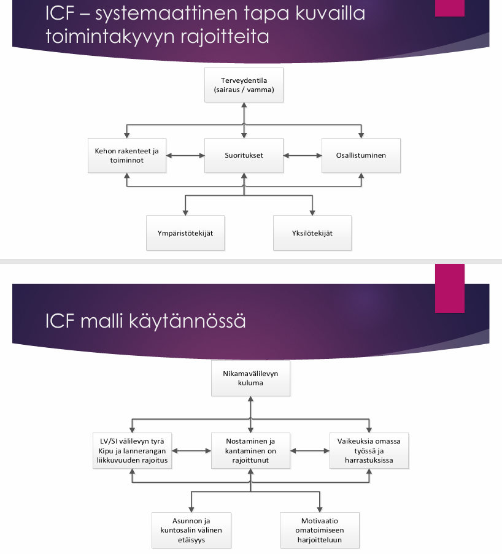
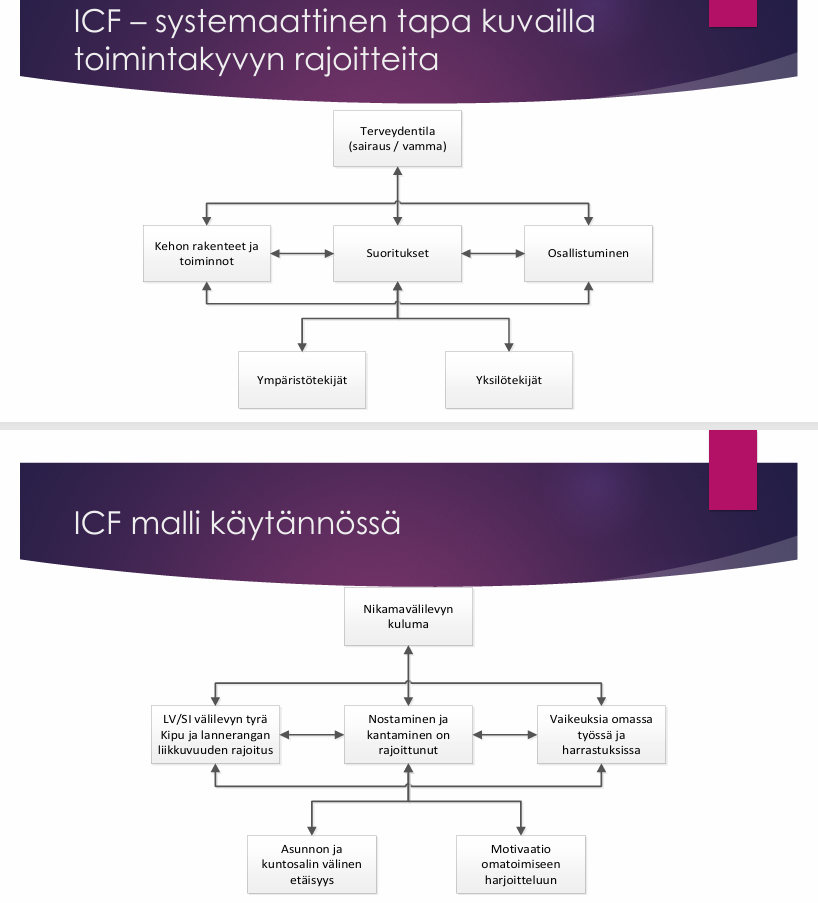
2.3.9 Miten toimintakykyä arvioidaan?
Ei vaihtoehtoja, mutta tässä tärkeimmät aiheesta:
Toimintakyky koostuu suorituskyvystä ja suoritustasosta
- Suorituskyky (Capacity) on yksilön kyky toteuttaa jokin tehtävä tai toimi vakioidussa ympäristössä. Se kuvaa korkeinta todennäköistä suoriutumista vakioiduissa olosuhteissa ilman apuvälineitä tai toisen ihmisen apua.
- Suoritustaso on konkreettisessa elämäntilanteessa realisoitunut suorituskyky. Tähän realisointiin vaikuttavat terveyden lisäksi ympäristö- ja yksilötekijät. Suoritustaso kuvaa mitä yksilö tekee nyky-ympäristössään esimerkiksi avustajan tai apuvälineen avulla.
- Objektiivisesti voimme luotettavasti mitatata vain suorituskykyä ja suoritustasoa ei voi objektiivisesti mitata, vaan tulee tyytyä potilaan kertomaan.
- Vastaanotolla nähtyä ja mitattua voi verrata potilaan tarinaan ja tätä kautta voidaan päästä lähemmäksi oikean toimintakyvyn arviota, vaikka koko totuutta ei saadakkaan selville.
Koska toimintakyky (tarkemmin suorituskyky) perustuu niin vahvasti potilaan arkeen, niin vaikka sairaus olisikin tarkasti määritelty, niin toimintakykyä ei voida arvioida ilman tietoa potilaan arjesta. Arvio myös suhteutetaan potilaan ikään (ikääntyminen ei ole sairautta vakuutuslääketieteessä) ja sairauden tai vamman ajankohtaan / kehitykseen sekä potilaan elämäntilanteeseen (koulutukseen, asuinpaikkakuntaan, asumismuotoon, perheen rakenteeseen, ammattiin yms.).
Toimintakykyä arvioidessa siis tulee suorien miitausten lisäksi kysyä potilaalta paljon. Tässä auttaa usein erilaiset kyselylomakkeet.
 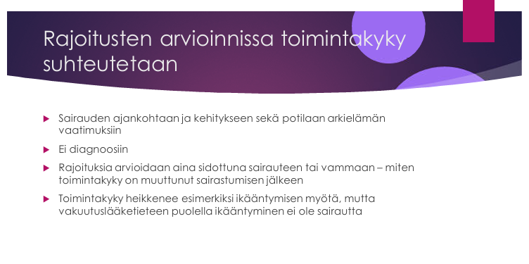
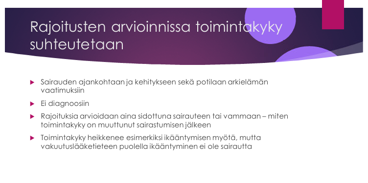
2.3.10 Mitä suoritustaso tarkoittaa?
Ei vaihtoehtoja, käyty myös juuri yllä läpi, mutta tässä uudestaan:
Suoritustaso on konkreettisessa elämäntilanteessa realisoitunut suorituskyky.
- Suoritustaso kuvaa sitä tasoa, jonka henkilö saavuttaa suorittaessaan yksittäistä toimintaa omassa konkreettisessa elämäntilanteessaan. Sen sijaan suorituskyky kuvaa sitä, mihin tasoon henkilö olisi tässä yksittäisessä toiminnossa yltänyt maksimaalisen suotuissa olosuhteissa.
- Esimerkiksi liikuntalaboratoriossa suoritetun polkurasitustestin tulos tai lääkärin vastaanottohuoneessa mitattu kävelyn nopeus kuvaavat suorituskykyä. Nopeus, jolla sama henkilö pääsee polkupyörällä työpaikalle, ja kävelyn vaikeus päivittäisten ruokakaupassa käyntien yhteydessä kuvaavat puolestaan suoritustasoa.
2.3.11 Suoritustason arvioiminen
Ei vaihtoehtoja, mutta käyty jo useaan otteeseen läpi. Tässä taas uudestaan.
- Suorituskyvyn mittaaminen on helpompaa, koska se on objektiivisesti mitattavissa (maksimaalinen suorituskyky vastaanotolla).
- Suoritustason arvioimisessa taas tulee nojata siihen, miten potilas kuvailee tilannettaan. Suoritustasomittareita ei ole paljon, ja suurin osa niistä on subjektiivisia, kuten esimerkiksi Oswestryn alaselkäkipukysely tai työkykyindeksi.

2.3.12 Mitä tarkoittaa suorituskyky
- Potilaan maksimaalinen suoriutuminen tietyissä tehtävissä täydellisissä olosuhteissa
- Potilaan suoriutuminen ilman apuvälineitä
- Valmiutta suorittaa päivittäisiä toimintoja
Solution.
a2.3.13 Määrittele työkyky
Ei vaihtoehtoja, tässä tärkeimmät aiheesta:
Työkyky tarkoittaa toimintakykyä suhteessa konkreettisen työn vaatimuksiin.
- Työkyky on siis osa toimintakykyä (erityisenkin olennainen osa työikäisen toimintakykyä).
- Ilman työterveyslääkärin asiantuntemusta työkyvyn rajoitteiden kuvaus on vaikeaa jos ei mahdotonta
On tärkeä muistaa, että työkyvyn arviota ei voida tehdä geneerisesti ilman sen peilaamista konkreettiseen työnkuvaan. Miten rajoitukset konkreettisissa toiminnoissa (esimerkiksi seisominen, kantaminen, ajaminen, henkinen hyvinvointi yms.) vaikeuttavat henkilön nykyistä työnkuvaa? Toinen tärkeä kysymys on, mikä on näiden rajoitusten ennuste. Miten kuuluu toimia silloin, kun henkilö ei ole ollut työelämässä, hänellä ei ole vakiintunutta ammattia tai hän on joutunut olemaan pitkään pois työelämästä? Tässä tapauksessa yleensä paras tapa on suhtauttaa henkilön toimintakyky työssä oleviin ja tarvittaviin haasteisiin.
Työkykyä arvioidessa on tärkeä muistaa, että “työkykyisyyden” ja “työkyvyttömyyden” käsitteet eivät ole lääketieteellisiä vaan juridisia käsitteitä. Lääkäri ei siis päätä sitä, onko henkilö työkykyinen vai työkyvytön. Sen sijaan hän pyrkii toimittamaan sosiaalivakuutukseen (Kela, työeläke- ja vakuutusyhtiöt) lääketieteellistä, objektiivista, luotettavaa ja selkeää tietoa, minkä perusteella päätös voidaan juridisesti tehdä.
2.3.14 Työkyky ja toimintakyky
Valitse yksi
- työkyky osa toimintakykyä
- Katsovat samaa asiaa eri näkökulmasta
- Toimintakyky osa työkykyä
Solution.
a2.3.15 Aiheuttaako sama sairaus samaa toimintakyvyn alenemaa
Valitse yksi
- Sama sairauden vaikeusaste aiheuttaa aina saman aleneman toimintakyvyssä eri ihmisillä
- Sama sairaus voi aiheuttaa erilaisen aleneman toimintakyvyssä eri ihmisillä
- Sama sairaus aiheuttaa aina saman aleneman toimintakyvyssä eri ihmisillä
- Erilaisen toimintakyvyn alenemisen muodostumiseen vaaditaan aina eri sairaus
Solution.
b2.3.16 Mikä lausunto tarvitaan vammaistukihakemusta varten?
Ei vaihtoehtoja, mutta koita vastata ilman vinkkejä
Solution.
C-lausuntoC-lausunto on lääkärin selvitys sairauden vaikutuksesta potilaan pitkäaikaiseen toimintakykyyn. C-lausunnossa arvioidaan myös, millaista apua ja ohjausta potilas tarvitsee, esimerkiksi apuvälineitä tai avustajaa.
Sitä tarvitaan vammais- tai hoitotuen saamista varten, kun arvioidaan ulkopuolisen avun tarvetta. Arviossa kirjoitetaan esim. pukeutumisen onnistumisesta, ruokailusta, hygienian ylläoidosta, omista asioista huolehtimisesta yms.
Tuen saamisen ehdot: toimintakyky on alentunut sairauden tai vamman vuoksi vähintään 1 vuoden ajan, on vaikeuksia itsestään huolehtimisessa ja selviytymisessä arjen toiminnoista (esim. kotitaloustöistä ja työ- tai opiskelutehtävistä).
Muista – vammaistuki vaatii hoito- ja kuntoutussuunnitelmaa. Joskus on helpompi laatia laaja B-lausunto – joudut kuitenkin tarkistamaan, että kaikki C-lausunnon asiat on kirjattu ylös.
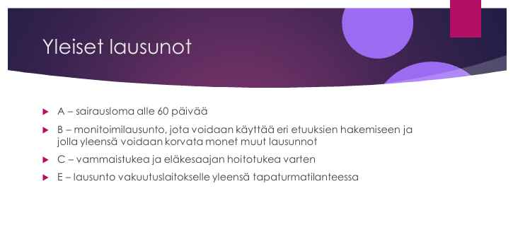2.4 Luento 7 : Alaselkäkipu
2.4.1 Selkäkivun punaiset liput
Ei vaihtoehtoja, mutta tässä tärkeimmät aiheesta:
Termiä punaiset liput on käytetty kuvaamaan anamnestisia ja kliinisiä löydöksiä, joiden on ajateltu lisäävän vakavien syiden todennäköisyyttä. Punaisen lipun merkit eivät kuitenkaan yksittäisinä ole selkeästi yhteydessä vakaviin syihin, mutta jos niitä esiintyy useampia yhtä aikaa, lisääntyy vakavan syyn todennäköisyys.
- Lääkärin tärkein tehtävä alaselkäkipuisen potilaan kanssa on poissulkea vakavat syyt.
- Punaisen lipun löydökset ovat kuitenkin yleisiä, ja niitä saattaa esiintyä jopa 80–90 %:lla akuutista selkäkivusta kärsivistä, vaikka vakavia syitä todetaan lisätutkimusten jälkeen vain noin prosentilla. Toisaalta punaisten lippujen puuttuminen ei sulje pois vakavan sairauden mahdollisuutta.
Kivun kesto, kipulääkkeiden riittämättömyys, rappeumamuutokset radiologisissa tutkimuksissa, potilaan turhautuneisuus, sairausloman pitkittyminen EIVÄT ole punaisia lippuja!
 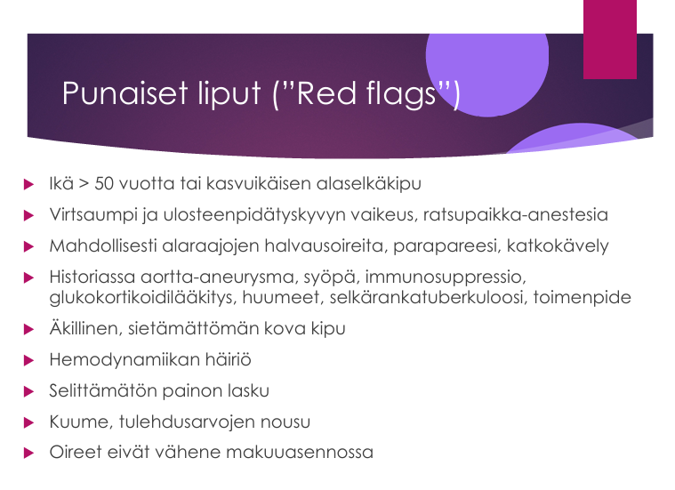
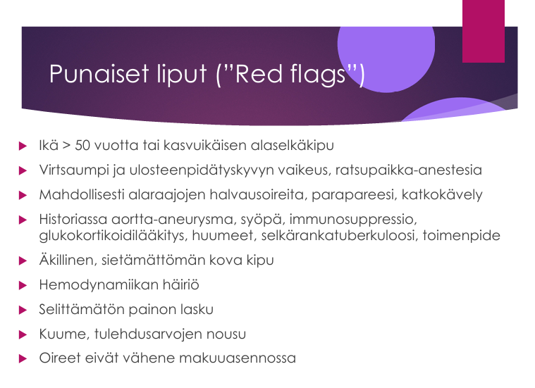
2.4.2 Mitä laboratoriokokeita otetaan alaselkäkipupotilaalta?
- TVK, CRP, ALAT
- Ei mitään
- Reumafaktori, tumavasta-aineet, munuaisarvot
- Joku muu
Solution.
bLaboratoriotutkimukset yleensä eivät ole tarpeen. Jos epäilet punaisen lipun oireita, lähetä eteenpäin.
Myöskään kuvantamistutkimukset eivät yleensä ole tarpeen.2.4.3 Epäspesifin alaselkäkivun lääkehoito
Ei vaihtoehtoja, mutta tässä periaatteet:
Tärkeintä on potilaan informointi – rohkaise liikkumaan, selitä oireiden vaarattomuus
- Lääkehoidosta kannattaa kertoa potilaalle, että lääkehoidon ensisijaisena tarkoituksena on kivunlievitys niin, että aktiivisena pysyminen on mahdollista, ei kivun täydellinen poistaminen
- Ensisijaisia kipulääkkeitä ovat NSAIDit (parhaat) ja parasetamoli (yhdistettynä NSAIDiin on kivun lievitys pelkkää NSAIDia tehokkaampaa). Lieviä opioideja (tramadoli) ja lihasrelaksantteja voidaan mahdollisesti kokeilla, mutta vain harkiten; vahvoja opioideja vältetään, koska ne eivät merkittävästi lievennä kivun voimakkuutta verrattuna lumelääkkeeseen.
- Kroonisessa kivussa voidaan kokeilla trisyklisiä masennuslääkkeitä tai SNRI-lääkkeitä. Niiden ei kuitenkaan yleisesti ole todettu olevan tehokkaampia lumelääkkeeseen verrattuna pitkittyneessä alaselkäkivussa. Gabapentiini ja vastaavat lääkkeet eivät kuulu epäspesifisen selkäkivun hoitoon – käytä hermoperäisessä kivussa.
- Lähete kipuklinikalle hankalassa tapauksessa (esim. epiduraalistimulaattorin yritys siellä)

2.4.4 Fasettinivelrikosta
Ei vaihtoehtoja, mutta tässä periaatteet:
- Fasettinivelet ovat synoviaaliniveliä, jotka ovat muodostuneet nivelhaarakkeiden (proc articularis superiror ja inferior) välille.
- Näiden nivelien artroosi on yleinen radiologinen löydös, joka liittyy ikääntymiseen.
- Osuus epäspesifisen selkäkivun aiheuttajana on epäselvä, mutta joidenkin lähteiden mukaan n. 15%:ssa tapauksista on arvioitu taustalla olevan fasettinivelrikko
- RTG:ssä voidaan todeta nivelen deformiteetti ja turvotus
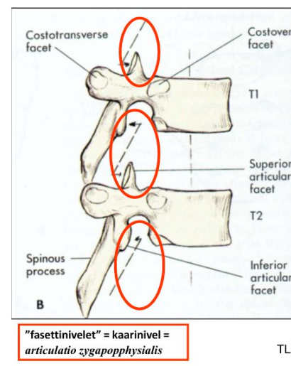
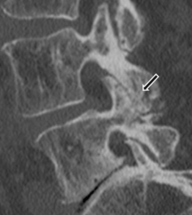

2.4.5 Miten tulee suhtautua Scheuermannin taudin löydöksiin röntgenissä?
Valitse yksi
- Vaatii usein lisäselvityksiä
- Selittää potilaan selkäkipua
- On usein vain esteettinen haitta
- Joku (Ei tärpeissä)
Solution.
cKasvukauden loppuvaiheessa ilmaantuvaa idiopaattista rakenteellista kyfoosia kutsutaan Scheuermannin taudiksi. Scheuermannin tauti on siis nikamien kasvuhäiriö (nuoruusiän selkärangan osteokondroosi). Sitä tulisi seuloa 7.–8. luokan terveystarkastuksissa. Tautia ei juuri esiinny alle 10-vuotiailla. Aikuisilla kyse on pikemminkin taudin jälkitilasta.
Scheuermannin taudissa selkärangan nikamat kiilautuvat nikamasolmun etuosan kasvuhäiriön seurauksena. Useimmilla lapsilla ei ole mitään oireita ja ongelma on lähinnä kosmeettinen (joskus rintarangan alueella esiintyy kipua). Kasvuikäisillä potilas tulisi kuitenkin lähettää ortopedille (aikuisilla ei tarvitse).
Kliinisesti todetaan korostunut rintarangan kyfoosi (”round back” etutaivutuksessa), jäykkyys selän liikkeissä ja hamstring-lihasten kireys reisissä. Diagnoosi perustuu röntgenkuvaan, jossa nähdään kiilamaiset, etuosastaan madaltuneet nikamat (3 rintanikamaa; vähintään 5 asteen kiilautuminen sivukuvassa) ja epämuotoiset nikamapäätelevyt; myöhemmässä vaiheessa Schmorlin prolapsit (= päätelevyn painaumat nikamakorpukseen), joka on aikuisilla merkityksetön löydös.
Hoitona on liiallisen fleksiokuormituksen (esim. painonnoston) välttäminen, ojennusharjoitukset, kyfoosikulman ylittäessä 60° korsettihoito, harvoin leikkaushoito (kyfoosi > 75°). Korsettihoito on sitä tehokkaampi, mitä nuorempi potilas on ja mitä myötäävämpi selkä on (virheasento on siis aluksi myötäävä).
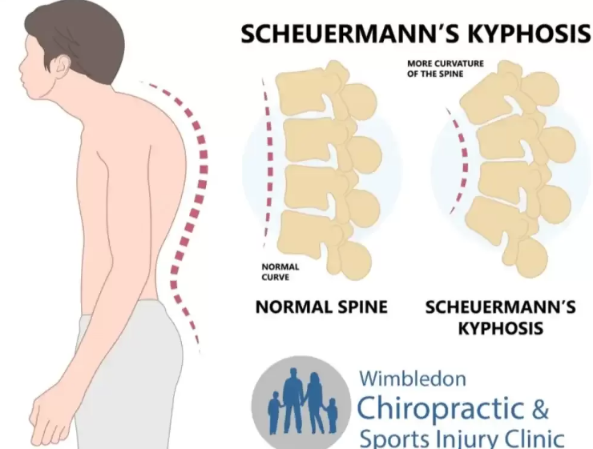
2.4.6 Spinaali ja verisuoniperäisen katkokävelyn ero
Ei vaihtoehtoja, mutta tässä tärkeimmät aiheesta:
Spinaalistenoosi = Selkäydinkanavan ahtauma
- Syynä yleensä välilevytyrä tai luinen ahtauma spondyloosin, fasettiartroosin tai nikamansiirtymän seurauksena
- Oireina on multippelit hermojuurivauriot ja/tai katkokävely
Verisuoniperäinen katkokävely = ASO-taudin (perifeerinen valtimotauti) edennyt vaihe
- Katkokävely = Klaudikaatio = Ajottainen lihaskipu, joka voidaan toistaa rasituksella ja joka lievittyy pienen levon jälkeen
- Lihakset menevät ASO-taudissa ”maitohapolle” iskemiasta johtuen, pakottaa pysähtymään tai hidastamaan vauhtia
Molemmat voivat siis aiheuttaa katkokävelyoiretta ja on äärimmäisen tärkeää osata erottaa neurogeeninen ja vaskulaarinen klaudikaatio. Tärkeimmät erot alla olevassa taulukossa.
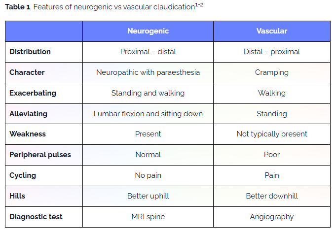


2.4.7 Milloin ENMG iskiaskipuiselle?
- Heti oireiden alkamisen jälkeen
- Vuosi oireiden alkamisen jälkeen
- ENMG:llä ei ole roolia iskiaskivun tutkimisessa
- 1-2kk kivun alkamisen jälkeen
Solution.
d2.4.8 Välilevyrappeuman seurantaperiaate
- Normaalilöydös iän myötä, ei vaadi seurantaa
- Magneetti vuoden välein
- Pitää tehdä lähete ESH leikkausarvioon
- Suosittele, että potilas vaihtaisi rennompaan työhön
Solution.
a
2.4.9 Kumpi spondylolisteesin muodoista aiheuttaa herkemmin selkäydinkanavan ahtauman?
- Spondylolyyttinen
- Degeneratiivinen
- Ei kumpikaan
- Molemmat yhtä paljon
Solution.
bDegeneratiivinen nikamansiirtymä (spondylolisteesi) on yleinen radiologinen löydös, joka liittyy ikääntymiseen. Johtuu fasettinivelien ja välilevyjen rappeutumisesta, joka johtaa koko nikaman siirtymiseen eteenpäin. Tämä voi ahtauttaa selkäydinkanavaa.
Spondylolyyttisessä spondylolisteesissä takakaari on poikki, jonka seurauksena nikaman solmu siirtyy eteenpäin ja takakaari pysyy paikalla. Tämä voi aiheuttaa hermojuurikanavien ahtautta, mutta selkäydinkanava jopa avautuu.

2.5 Luento 8: Kuntoutus
2.5.1 Kuntoutuksen sijainti hoitoketjussa
Valitse yksi
- Kuntoutuksella lievitetään oireita
- Kuntoutuksella estetään uusiutumista
- Kuntoutuksella varmistetaan henkilön osallistumista hänelle tavanomaisiin toimiin sairauden aiheuttaman vaikeudesta huolimatta
- Kuntoutuksella pyritään palauttamaan henkilön toimintakyky korkeimmalle mahdolliselle tasolle
Solution.
c
2.5.2 Kuntoutuksen peruste
- Toimintakyvyn aleneminen
- Oireiden vaikeusaste
- Hidas paraneminen
- Pitkittynyt sairasloma
Solution.
a
2.5.3 Missä lääkkeellistä kuntoutusta järjestetään?
Valitse yksi
- 50/50 julkinen yksityinen
- Yksityinen vain jos julkiselta ei löydy maksajaa
- Jotain
Solution.
a2.5.4 Työikäisen ihmisen kuntoutuksen tavoite
Ei vaihtoehtoja, mutta tässä tärkeimmät kuntoutuksen tavoitteista:
Yleisesti kuntoutus määritellään näin: ” Toimenpidekokonaisuus, jonka tavoitteena on alentuneen toimintakyvyn optimointi” (ei siis maksimointi)
- Työikäisellä tavoite on yleensä, että työkyky paranee tai ainakin säilyy. Tavoite ei siis ole toimintakyvyn maksimointi!
- Tavoitteena ei ole ikääntymisen aiheuttamien oireiden hoito.
- Tavoitteena ei ole rappeuma-ja kulumaprosesseista johtuvien oireiden hoito tai ehkäisy
 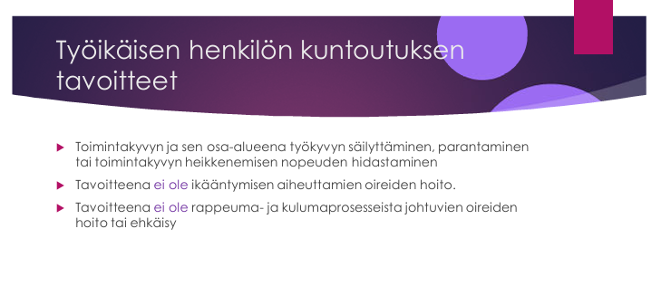
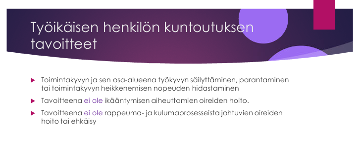
2.5.5 Kelan lääkinnällinen kuntoutus
Tärpeissä vain annettu vastaus: Lakisääteinen ja harkinnanvarainen. Tässä lyhyesti kuntoutuksen eri päämuodoista:
- Lääkinnällinen = Vähentää sairauden aiheuttamien rajoitusten vaikeutta
- Tätä tuottaa n. puolet julkinen (julkinen terveydenhuolto tai kela) ja n. puolet yksityinen puoli (potilas itse tai vakuutuslaitokset)
- Kela kustantaa lääkinnällistä kuntoutusta joko lakisääteisesti (vaativa lääkinnällinen kuntoutus ja kuntoutuspsykoterapia) tai harkinnanvaraisesti (esimerkiksi Kelan kurssit).
- Kela kustantaa lääkinnällistä kuntoutusta joko lakisääteisesti (vaativa lääkinnällinen kuntoutus ja kuntoutuspsykoterapia) tai harkinnanvaraisesti (esimerkiksi Kelan kurssit).
- Tätä tuottaa n. puolet julkinen (julkinen terveydenhuolto tai kela) ja n. puolet yksityinen puoli (potilas itse tai vakuutuslaitokset)
- Ammatillinen = Parantaa tai ylläpitää henkilön työkykyä, työssä jaksamista, ammatillisia valmiuksia sekä ansiomahdollisuuksia
- Potilaalla on oikeus ammatilliseen kuntoutukseen, jos hakijalle tulisi lähivuosina ilman kuntoutustoimenpiteitä myönnettäväksi työkyvyttömyyseläke (työkyvyttömyyden uhka). Tulee myös olla edellytyksen kuntoutukseen (Fyysiset, psyykkiset ja sosiaaliset rajoitukset, elämäntilanne, taloudelliset seikat, asumisolosuhteet, koulutus, ammatti, aikaisempi toiminta, ikä)
- Sosiaalinen = Parantaa sosiaalista toimintakykyä mm. helpottamalla asumista, liikkumista ja yleistä osallistumista huolehtimalla taloudellisesta turvallisuudesta ja tukemalla sosiaalisia verkostoja
- Kasvatuksellinen = Pitkäaikaissairaan lapsen tai aikuisen kasvatuksen ja koulutuksen tukeminen yhdistämällä kasvatus, opetus, oppilashuolto ja kuntoutus toisiinsa


2.5.6 Lääkkeellisen kuntoutuksen aiheellisuus
- Aiheellista kun hoito ollut vuoden riittämätön
- Aiheellista kun potilas käyttää yhtä kävelysauvaa
- Aiheellista työkyvyn ollessa uhattuna
- Aiheellista kun toimintakyky on alentunut sairauden vuoksi vähintään vuoden ja henkilöllä on huomattavia vaikeuksia huolehtia arjen toiminnoista tai itsestään
Solution.
d
2.5.7 Milloin ammatilliselle kuntoutukselle löytyy luultavimmin maksaja?
Ei vaihtoehtoja tärpeissä, mutta annettu vastaus: “Kun työkyky on alentumassa seuraavan 5v aikana tms”
Yllä jo käyty läpi, mutta potilaalla on oikeus ammatilliseen kuntoutukseen, jos hakijalle tulisi lähivuosina ilman kuntoutustoimenpiteitä myönnettäväksi työkyvyttömyyseläke (työkyvyttömyyden uhka).
- Yksinkertaistettuna työkyvyttömyyden uhka tarkoittaa, että lääkäri epäilee potilaan työkyvyn heikkenevän sairauden tai vamman vuoksi 5 vuoden sisällä siinä määrin, että hän saattaa poistua työmarkkinoilta
- Työuran pituus, ammatin sopimattomuus tai lääkärin näkemys ammatin vaihdon tarpeellisuudesta eivät oikeuta ammatilliseen kuntoutukseen
Kuntoutuksen muotoja ovat:
- Ammatillisen kuntoutuksen selvitys (eri yksityiset palveluntuottajat)
- Työkokeilu (yleensä kokoaikainen)
- Uudelleenkoulutus
- Työhönvalmennus
- Elinkeinotuki
Kuka sitten maksaa? Kannattaa muistaa, että ensisijainen vastuu ammatillisesta kuntoutuksesta on tapaturmavakuutuksella, sen jälkeen tulee työeläkelaitoksen vuoro ja vasta sen jälkeen Kelan.
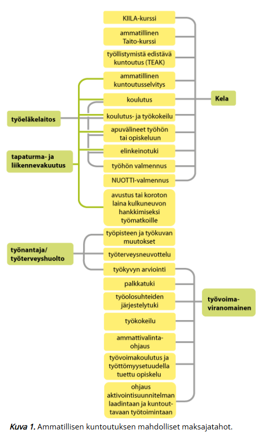